리눅스마스터-1급 (2012-03-10 기출문제)
1과목: 리눅스 실무의 이해
1. 시스템 프로그램에 대한 설명으로 틀린 것은?
- 어셈블러 : 저급 언어로 작성된 프로그램을 기계어로 번역하는 언어 번역 프로그램이다.
- 매크로 프로세서 : 매크로 호출(Macro Call)을 매크로 정의(Macro Definition)로 바꾸어 주는 프로그램이다.
- 로더 : 다른 프로그램의 호출에 의해서 실행되는 고유한 기능을 수행하는 프로그램이다.
- 컴파일러 : 고급 언어로 된 원시 프로그램을 분석해서 이에 대응되는 목적 프로그램을 생성하는 프로그램이다.
(정답률: 59%)

2. 다음 ( 괄호 )안에 들어갈 내용을 순서에 맞게 나열한 것은?
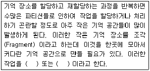
- 압축(Compaction, Recompaction), 쓰레기 수집(Garbage Collection)
- 세그먼트 기법(Segmentation), 압축(Compaction, Recompaction)
- 쓰레기 수집(Garbage Collection), 세그먼트 기법(Segmentation)
- 베이스-경계 재배치(Base-Bound Relocation), 압축(Compaction, Recompaction)
(정답률: 55%)
3. GPL(General Public License)에 대한 설명으로 틀린 것은?
- FSF(Free Software Foundation)에 의해 만들어진 특별한 라이선스이다.
- GNU 정신에 입각하여 모든 프로그램의 소스를 공개하자는 것이 목적이다.
- 개발된 프로그램의 소스 코드를 자유롭게 수정하고 재배포할 수 있다.
- vi 편집기를 수정해서 편집기 개발 도구를 만들었다면 이 개발 도구는 GPL라이선스를 가질 수 있다.
(정답률: 70%)
4. 자유 소프트웨어(Free Software)를 충족시키는 조건을 모두 고른 것으로 알맞은 것은?
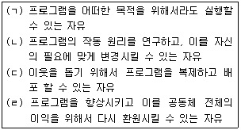
- (ㄱ), (ㄴ)
- (ㄱ), (ㄴ), (ㄷ)
- (ㄱ), (ㄷ), (ㄹ)
- (ㄱ), (ㄴ), (ㄷ), (ㄹ)
(정답률: 82%)
5. 오픈소스(자유 소프트웨어)의 종류로 틀린 것은?
- 공용 소프트웨어
- GPL 소프트웨어
- 프리웨어(Freeware)
- XFree86 형태의 소프트웨어
(정답률: 49%)
6. RAID(Redundant Array of Independent)의 각 레벨에 관한 설명으로 알맞은 것은?
- RAID-0 : 데이터를 중복해서 기록하지 않아서 가장 높은 성능과 고장 대비 능력이 있다.
- RAID-1 : 중복 저장된 데이터를 가진 2개의 드라이브로 구성되며 각 드라이브를 동시에 읽고 쓰기를 못한다.
- RAID-5 : 패리티 정보를 저장하지만 데이터를 중복 저장하지 않고, 다중 사용자 시스템에 적합하다.
- RAID-53 : 각 스트립은 raid-5 디스크 어레이인 스트립 어레이지를 제공하고 raid-3보다 높은 성능을 제공하지만 값이 더 비싸다.
(정답률: 58%)
7. GRUB/LILO에 관한 설명 중 틀린 것은?
- GRUB/LILO가 MBR(Master Boot Record)에 설치된다.
- 윈도우 비스타/7에서는 bootrec.exe /fixmbr로 MBR을 복구한다.
- GRUB은 grub-uninstall로 삭제한다.
- LILO는 lilo -u로 삭제한다.
(정답률: 51%)
8. 다음 중 /etc에 관한 설명으로 틀린 것은?
- 시스템에 관한 각종 환경 설정에 연관된 파일들과 디렉토리를 가진 디렉토리이다.
- 시스템의 부팅과 시스템 실행 레벨 변경시에 실행되는 스크립트들이 저장되어 있다.
- 이 디렉토리에는 5가지의 실행 레벨별로 각 각의 해당 디렉토리가 있다.
- 이 디렉토리에는 사용자가 로그인을 할 때 본(Bourne)쉘이나 C쉘에 의해서 실행되는 스크립트 파일들이 있다.
(정답률: 61%)
9. 다음 ( 괄호 )안에 들어갈 내용으로 알맞은 것은?
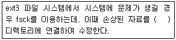
- /lost＋found
- /mnt
- /usr/lib
- /lib/modules
(정답률: 74%)
10. 현재 디렉토리와 현재 디렉토리의 모든 하위 디렉토리에 있는 파일 중 .c 로 끝나는 파일들에서 ihd라는 문자열이 포함된 파일을 찾기 위한 명령으로 알맞은 것은?
- find . -name "*.c" | grep "ihd"
- find . -name "*.c" -exec grep ihd {} \;
- grep -l "ihd" | find -name "*.c"
- find . -name "*.c" -exec grep -l ihd {} \;
(정답률: 44%)
11. 다음 cal.sh 스크립트의 실행 결과 값으로 알맞은 것은?
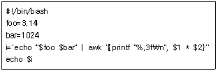
- 3215.36
- 3215.360
- 3072
- 3.141
(정답률: 60%)
12. 반복문 while의 문법 형식으로 알맞은 것은?
- while 조건문 do 명령어들 done
- while 변수 do 명령어들 done
- while 조건문 in 명령어들 done
- until 조건문 do 명령어들 done
(정답률: 80%)
13. 다음에서 설명하는 디렉토리로 알맞은 것은?
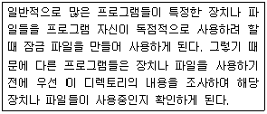
- /var/lock
- /var/run
- /var/spool
- /var/tmp
(정답률: 60%)
14. 다음 프로세스 상태에 대한 설명 중 ( 괄호 )안에 들어갈 내용으로 알맞은 것은?
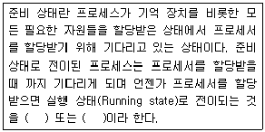
- 디스패치(Dispatch), 스케줄(Schedule)
- 선점(Preemption), 디스패치(Dispatch)
- 스케줄(Schedule), 선점(Preemption)
- 디스패치(Dispatch), 블록(Block)
(정답률: 54%)
15. 다음 중 프로세스 관련 용어에 대한 설명으로 틀린 것은?
- 프로그램(Program) : 특정 기능을 수행하기 위한 명령어의 조합이다.
- 작업(Job) : 프로그램과 프로그램 실행에 필요한 입력 데이터이다.
- 프로세스(Process) : 실행중인 프로그램의 인스턴스이다.
- 스레드(Thread) : 프로그램의 일부로 공통적으로 사용되는 특정 루틴이다.
(정답률: 56%)
16. 다음 중 OSI 7 Layer 중 전송 계층을 (N)계층 이라 하면 (N+1)계층은?
- 데이터 계층
- 네트워크 계층
- 세션 계층
- 응용 계층
(정답률: 82%)
17. TCP의 Three-way handshake 3단계의 연결 절차로 알맞은 것은?
- SYN, SYN+ACK, ACK
- SYN, SYN+SYN, ACK
- ACK, SYN+ACK, SYN
- SYN, ACK+SYN, SYN
(정답률: 72%)
18. 다음 중 커널에 모듈을 다루는 명령어 중 틀린 것은?
- /sbin/lsmod : 현재 적재되어 있는 모듈들의 정보를 보여준다.
- /sbin/insmod : 적재하고자 하는 모듈을 인서트 한다.
- /sbin/rmmod : 현재 적재되어 있는 모듈을 제거한다.
- /sbin/modprobe : 의존성 있는 모듈들은 수동으로 적재 및 제거한다.
(정답률: 74%)
19. 다음 중 리눅스가 지원하는 네트워크 인터페이스 관련 설정파일이 들어 있는 디렉토리로 알맞은 것은?
- /etc/init.d/network
- /etc/sysconfig/network-scripts
- /etc/sysconfig/network
- /etc/resolv.conf
(정답률: 74%)
20. 다음 내용 중 ( 괄호 )안에 들어갈 내용으로 알맞은 것은?
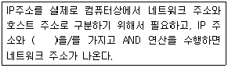
- 서브넷 마스크
- 라우팅 테이블
- ARP
- DNS
(정답률: 83%)
2과목: 리눅스 시스템 관리
21. 다음의 환경 변수 중 로그인 한 뒤에 일정 시간동안 작업을 하지 않을 경우 로그아웃 되도록 설정할 때 알맞은 것은?
- TERM
- TMOUT
- HISTSIZE
- LOGOUT
(정답률: 77%)
22. 다음 중 사용자 계정 파일인 /etc/passwd에 대한 설명으로 틀린 것은?
- 숫자로 표현된 사용자 ID를 알 수 있다.
- 사용자가 속한 그룹명을 알 수 있다.
- 사용자의 홈디렉토리를 알 수 있다.
- 사용자의 로그인 쉘을 알 수 있다.
(정답률: 54%)
23. 다음 중 사용자와 그룹에 대한 설명으로 틀린것은?
- 사용자를 생성하면 자동으로 특정 그룹에 속한다.
- 사용자를 추가로 다른 그룹에 포함시키려면 groupmod 명령을 사용한다.
- /etc/group 파일에서 해당 그룹에 추가로 포함된 사용자를 확인할 수 있다.
- 그룹 추가는 groupadd, 그룹 삭제는 groupdel 명령을 사용한다.
(정답률: 57%)
24. 다음의 명령을 수행했을 경우 변화되는 파일로 알맞은 것은?
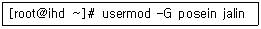
- /etc/passwd
- /etc/shadow
- /etc/group
- /etc/login.defs
(정답률: 64%)
25. 다음 중 사용자 계정을 일시적으로 로그인하지 못하도록 할 때 유용한 명령어로 알맞은 것은?
- passwd
- userdel
- su
- sudo
(정답률: 60%)
26. 다음 명령의 결과와 관련된 설명으로 틀린 것은?
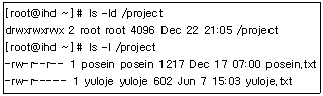
- posein 계정은 yuloje.txt의 내용을 볼 수 없다.
- jalin 계정이 /project 디렉토리에 파일생성을 할 수 없다.
- yuloje 계정은 posein.txt를 지울 수 있다.
- jalin 계정이 posein.txt의 내용을 볼 수 있다.
(정답률: 48%)
27. 다음에서 설명하는 것으로 알맞은 것은?
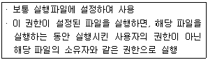
- PAM
- SUID
- SGID
- Sticky bit
(정답률: 68%)
28. 다음 중 실수로 삭제한 파일을 복구하기 위해 사용하는 명령어로 알맞은 것은?
- dumpe2fs
- debugfs
- tune2fs
- e2fsck
(정답률: 37%)
29. 다음 중 하드디스크 추가 후에 필요한 명령을 순서에 맞게 나열한 것은?
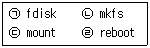
- (ㄱ) ￫ (ㄴ) ￫ (ㄷ) ￫ (ㄹ)
- (ㄱ) ￫ (ㄹ) ￫ (ㄴ) ￫ (ㄷ)
- (ㄱ) ￫ (ㄴ) ￫ (ㄹ) ￫ (ㄷ)
- (ㄹ) ￫ (ㄱ) ￫ (ㄴ) ￫ (ㄷ)
(정답률: 34%)
30. 다음은 스왑파일을 생성하는 절차를 나타낸 것이다. ( 괄호 )안에 들어갈 내용으로 알맞은 것은?
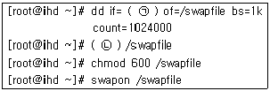
- (ㄱ) /dev/null (ㄴ) mkswap
- (ㄱ) /dev/null (ㄴ) mkswap -c
- (ㄱ) /dev/zero (ㄴ) mkswap
- (ㄱ) /dev/zero (ㄴ) mkswap -c
(정답률: 37%)
31. 다음 중 부팅시 실행되는 프로세스의 실행 레벨(Run Level)을 변경하고자 할 때 수정해야할 파일로 알맞은 것은?
- /etc/fstab
- /etc/xinetd.conf
- /etc/inittab
- /etc/ld.so.conf
(정답률: 81%)
32. 다음 중 포그라운드(Foreground)로 실행중인 프로세스를 백그라운드(Background)로 전환하기 위해서 사용하는 인터럽트 키 조합으로 알맞은 것은?
- [ctrl]+[c]
- [ctrl]+[d]
- [ctrl]+[x]
- [ctrl]+[z]
(정답률: 70%)
33. 다음 중 kill 및 killall 명령어에 관한 설명으로 틀린 것은?
- 두 명령어 모두 시그널 이름을 지정하지 않으면 SIGTERM 시그널이 전송된다.
- 두 명령어 모두 같은 시그널 이름 및 번호를 공유해서 사용한다.
- 두 명령어 모두 PID(Process ID)를 이용해서 프로세스를 종료시킬 수 있다.
- kill 명령어는 PID 이외에 작업 번호로도 프로세스를 종료시킬 수 있다.
(정답률: 43%)
34. tar 명령을 이용하여 백업할 때 사용자가 로그아웃하거나 터미널창이 닫혀도 해당 프로세스를 계속 진행하고자 한다. 다음 ( 괄호 )안에 들어갈 명령으로 알맞은 것은?
- renice
- nohup
- fork
- exec
(정답률: 73%)
35. 다음 중 ( 괄호 )안에 들어갈 내용으로 알맞은 것은?
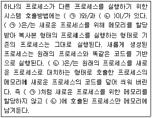
- (ㄱ) fork, (ㄴ) exec
- (ㄱ) kernel, (ㄴ) init
- (ㄱ) exec, (ㄴ) fork
- (ㄱ) init, (ㄴ) kernel
(정답률: 73%)
36. rpm으로 설치된 httpd 패키지를 제거하려 했으나, 의존성으로 인해 제거되지 않았다. 의존성을 검사하지 않고, 제거하려고 할 때 ( 괄호 )안에 알맞은 것은?
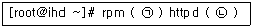
- (ㄱ) -i (ㄴ) --nodeps
- (ㄱ) -e (ㄴ) --nodeps
- (ㄱ) -x (ㄴ) --nodeps
- (ㄱ) -d (ㄴ) --nodeps
(정답률: 66%)
37. rpm 명령어를 사용하여 아래와 같은 결과를 얻었을 경우 ( 괄호 )안에 들어갈 내용으로 알맞은 것은?
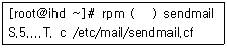
- -qa
- -V
- -qc
- -ql
(정답률: 52%)
38. 다음에서 설명하는 것으로 알맞은 것은?
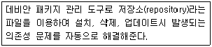
- yum
- apt-get
- dselect
- alien
(정답률: 71%)
39. C언어를 이용하여 어떤 프로그램을 posein.c, yuloje.c 두 개의 소스로 구성하였다. 이 두 개의 소스를 이용하여 jalin이라는 실행파일을 만들고자 할 때 알맞은 것은?
- gcc jalin posein.c yuloje.c
- gcc -o jalin posein.c yuloje.c
- gcc -c jalin posein.c yuloje.c
- gcc -I jalin posein.c yuloje.c
(정답률: 56%)
40. 최신 리눅스 커널로 업그레이드하기 위해 최신의 소스를 다운받아 설치하고자 한다. ( 괄호 )안에 들어갈 옵션으로 알맞은 것은?
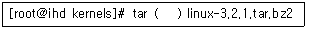
- Zxvf
- zxvf
- jxvf
- bxvf
(정답률: 67%)
41. 커널 모듈을 로드하는 명령어로 알맞은 것은?
- insmod, modprobe
- rmmod, modprobe
- lsmod, modprobe
- lsmod, insmod
(정답률: 59%)
42. 다음 결과의 명령어로 알맞은 것은?
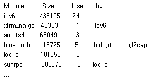
- lspci
- lsmod
- lsof
- lsusb
(정답률: 73%)
43. 커널이 플래시, RAM, 칩과 같은 장치를 하나의 파일 시스템으로 인식하여 관리할 수 있도록 해주는 것으로 알맞은 것은?
- MTD(Memory Technology Devices)
- 플러그 엔 플레이(Plug-and-Play)
- 블록장치(Block devices)
- 다중 장치 지원(Multi-device Support)
(정답률: 43%)
44. 디스크의 물리적 불량 섹터(Bad Sector)를 검사하는 명령어로 알맞은 것은?
- badblocks
- fsck
- mount
- fdisk
(정답률: 66%)
45. 시스템이 심각한 문제(Crash)가 있어도 Magic System Request key를 통제할 수 있는데, Magic System Request key의 조합으로 알맞은 것은?
- <Alt> + <SysRq> + "Key"
- <Ctrl> + <SysRq> + "Key"
- <Alt> + <ScrLK> + "Key"
- <Ctrl> + <Break> + "Key"
(정답률: 45%)
46. 리눅스 파티션을 복사하기 전에 언마운트를 시도 했지만 umount: /mnt: device is busy로 실패했다. /mnt 디렉토리에서 해당 프로세스를 식별하고 종료하는 명령어로 알맞은 것은?
- fuser
- pkill
- killall
- ps
(정답률: 36%)
47. 새로운 16Tb 디스크에 파티션을 만들기 위해서 fdisk 명령어를 사용했지만 fdisk 유틸리티는 gpt 레이블을 지원하지 못한다는 메시지가 출력되었다. 이럴 경우 2Tb 이상의 대용량 디스크를 지원하기 위해 사용하는 명령어로 알맞은 것은?
- sfdisk
- parted
- partprobe
- mkfs
(정답률: 40%)
48. 다음 중 모듈 사이의 의존성을 검사하여 modules.dep 와 map파일을 생성하는 명령어로 알맞은 것은?
- depmod
- modprobe
- mkfs
- mkinitrd
(정답률: 65%)
49. 커널 컴파일시 모듈이 설치되는 디렉토리로 알맞은 것은?
- /lib/modules/‘uname -r’
- /lib/modules/‘uname -a’
- /lib/‘uname -r’
- /lib/‘uname -a’
(정답률: 49%)
50. 다음 중 프린터 설정 파일의 특징으로 틀린 것은?
- mx : 인쇄 가능한 최대 파일 크기를 나타낸다.
- sh : suppress headers를 말하며 디폴트는 헤더 출력을 하지 않는다.
- if : 출력 필터를 말한다.
- lp : 프린터가 장착된 포트 이름을 가리킨다.
(정답률: 56%)
51. 다음 중 리눅스 로그 파일 관리 도구인 logrotate에 대한 설명으로 틀린 것은?
- 지정한 기간이 지나면 로그 파일을 순환시킨다.
- 지정한 파일 크기보다 커지면 로그 파일을 순환시킨다.
- 로그 파일을 압축해서 보관할 수 있다.
- cron에 의해 1주일 단위로만 실행된다.
(정답률: 75%)
52. 다음 중 su 명령을 사용하여 root로 사용자 전환한 기록을 확인하고자 할 때 ( 괄호 )안에 들어갈 로그 파일로 알맞은 것은?
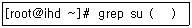
- /var/log/messages
- /var/log/secure
- /var/log/boot.log
- /var/log/access_log
(정답률: 52%)
53. 최근 리눅스 시스템에서는 로그인에 실패한 계정 정보만을 모아서 특정 로그 파일에 기록하여 저장한다. 해당 로그 기록을 확인할 때 사용하는 명령어로 알맞은 것은?
- dmesg
- last
- lastb
- lastlog
(정답률: 63%)
54. 다음 중 원격 터미널에서 접근하는 모든 사용자를 제한하고 메시지를 전달할 때 사용하는 파일로 알맞은 것은?
- /etc/securetty
- /etc/issue.net
- /etc/nologin
- /etc/services
(정답률: 47%)
55. /etc/passwd 파일 점검 중 변경 시간(Modify Time)에는 이상이 없으나 파일의 크기가 의심스러워 실제 변경 시간(Change Time)을 확인하기 위해 명령을 수행하였다. ( 괄호 )안에 알맞은 명령어는?
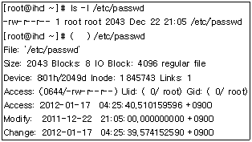
- stat
- status
- fuser
- sync
(정답률: 51%)
56. SSH의 공개키 및 개인키 방식을 이용하여 접속하고자 할 경우 SSH 클라이언트에서 생성한 공개키를 SSH 서버에 복사해야 한다. 다음 중 서버에 생성해야 할 파일명으로 알맞은 것은?
- identity
- id_rsa
- id_dsa
- authorized_keys
(정답률: 59%)
57. 일반 사용자인 posein을 계정 관리자로 지정하고자 한다. root 암호를 알려주기에는 부담스럽고, 계정 관리를 위해 useradd 및 passwd 명령만 사용하도록 할 경우에 유용한 도구로 알맞은 것은?
- su
- sudo
- tripwire
- cops
(정답률: 70%)
58. 다음 중 백업 대상으로 고려할 디렉토리로 가장 거리가 먼 것은?
- /etc
- /var
- /usr
- /proc
(정답률: 64%)
59. 다음 cpio 명령을 이용하여 데이터를 복원 할 경우 ( 괄호 )안에 알맞은 것은?
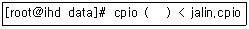
- -icdv
- -ocv
- -rf
- -bf
(정답률: 43%)
60. 다음 중 dump를 이용한 백업에 관한 설명으로 틀린 것은?
- 파티션 단위의 백업을 지원한다.
- 복원은 restore 명령을 사용한다.
- /etc 등 디렉토리 단위의 백업을 지원한다.
- 전체 백업 뿐만 아니라 증분백업도 지원한다.
(정답률: 51%)
3과목: 네트워크 및 서비스의 활용
61. 다음 중 apache 웹서버의 httpd.conf 파일의 섹션으로 틀린 것은?
- Main Server
- Global Environment
- Virtual Host
- Share Definitions
(정답률: 49%)
62. 다음 중 httpd.conf 환경설정에서 특정 디렉토리를 제어할 때 사용하는 지시자 옵션의 설명으로 틀린 것은?
- None : 어떤 옵션도 이용할 수 없으므로 모든 접근을 거부
- ALL : MultiViews 옵션을 이용할 수 있으므로 모든 접근을 허용
- ExecCGI : CGI 스크립트를 실행할 수 있도록 허용
- FollowSymLinks : 디렉토리의 심볼릭 링크 사용을 거부
(정답률: 55%)
63. 모자이크 브라우저의 개발에 참여하였던 사람들이 모체가 되어 탄생시킨 최초의 상업용 웹브라우저로 알맞은 것은?
- 파이어폭스
- 인터넷 익스플로러
- 사파리
- 네스케이프
(정답률: 61%)
64. NCSA에서 내놓았던 웹 서버로 처음에는 NCSA httpd로 불리우다가 현재 전 세계에서 가장 많이 사용되는 웹 서버로 알맞은 것은?
- IIS
- iplanet
- apache
- Enterprise
(정답률: 79%)
65. apache 서버(/usr/local/apache/)의 주요 하위 디렉토리에 대한 설명으로 틀린 것은?
- bin : 아파치에 필요한 유틸리티 디렉토리
- cgi-bin : cgi 스크립트가 있는 디렉토리
- conf : 아파치 서버의 여러 설정파일이 들어 있는 디렉토리
- var : 아파치 서버 사용시 발생하는 여러 가지 로그들이 위치하는 디렉토리
(정답률: 40%)
66. 다음의 httpd.conf 환경설정 중 MPM 모듈에 대한 설명으로 틀린 것은?
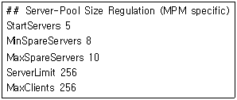
- 처음 웹서버가 시작할 때 실행될 서버의 개수는 5개 이다.
- 최대 실행 될 수 있는 서버의 개수는 10개 이다.
- 동시에 실행 할 수 있는 서버의 개수는 256개이다.
- 클라이언트가 동시에 접속했을 때 실행 가능한 프로세스의 수는 256개 이다.
(정답률: 41%)
67. apache의 이름기반 가상호스트에 대한 설명 중 틀린 것은?
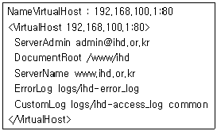
- 관리자 메일주소는 admin@ihd.or.kr 이다.
- 홈 디렉토리는 /www/ 디렉토리 이다.
- 도메인 네임은 www.ihd.or.kr 이다.
- access 로그는 logs/ihd-access_log 파일로 기록된다.
(정답률: 67%)
68. 웹 브라우저에서 HTML로 여러 가지 정보를 표현 할 수 있지만, 그 기능만으로 모든 정보처리를 할 수 없다. 이것을 보충하기 위해 외부 프로그램과 웹서버(HTTP Server) 간의 연결 역할을 하기 위한 규약으로 알맞은 것은?
- Java
- CGI
- SSL
- PHP
(정답률: 55%)
69. 다음 중 아파치 httpd 명령어 옵션의 설명으로 틀린 것은?
- httpd -t : 환경설정파일의 문법을 점검한다.
- httpd -l : 현재 컴파일된 모듈에 대한 목록을 보여준다.
- httpd -S : 현재 시스템에 설정되어있는 가상 호스트의 리스트를 보여준다.
- httpd -X : httpd 버전을 프린트하고 실행을 마친다.
(정답률: 50%)
70. 다음 중 메인 아파치 설정 파일의 일반적인 위치로 알맞은 것은?
- /etc/httpd/conf/apache.conf
- /etc/httpd/conf/httpd.conf
- /etc/httpd/httpd.conf
- /etc/httpd/apache.conf
(정답률: 45%)
71. 다음 중 아파치 웹서버의 디렉토리 인증 설정 중 ihd.or.kr 도메인을 제외한 모든 도메인으로부터, “/var/www/html/” 디렉토리에 접근하는 것을 막고자 할 때 지시어로 알맞은 것은?
- order allow,deny
allow from .ihd.or.kr
deny from all - order deny,allow
allow from .ihd.or.kr
deny from all - acl all src 0.0.0.0/0.0.0.0
acl ihd srcdomain .ihd.or.kr
http_access accept ihd
http_access deny all - order deny,allow
allow from all
deny from .ihd.or.kr
(정답률: 38%)
72. 다음 중 apache 웹서버의 가상 호스트(Virtual Host)에 대한 설명으로 틀린 것은?
- 하나의 시스템에서 여러개의 호스트로 웹서비스를 할 수 있다.
- 시스템 자원을 절약할 수 있다.
- 혼합이름/IP 기반(Mixed Name & IP-based Virtual Hosting) 가상호스팅을 이용하여 2개 이상의 IP주소로 웹 호스팅을 할 수 있다.
- port 기반으로 도메인을 호스팅 할 수 없다.
(정답률: 69%)
73. "WWW(World Wide Web)브라우저와 WWW 서버간에 데이터를 안전하게 주고받기 위한 업계 표준 프로토콜로 미국 네스케이프 커뮤니케이션즈 회사가 개발하였고, 마이크로 소프트사 등 주요 웹 제품업체가 채택하고 있는 프로토콜로 전송 규약 및 인증 암호화 기능이 있다." 다음 내용이 설명하고 있는 것은 무엇인가?
- VPN
- SSL
- HTML
- CGI
(정답률: 69%)
74. 리눅스 환경에서 사용되는 데이터베이스가 아닌 것은?
- MySQL
- PostgreSQL
- Informix
- MSSQL
(정답률: 67%)
75. 다음 apache, php, mysql 연동설치를 위한 php configure 설정의 설명이 틀린 것은?
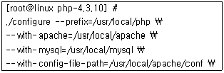
- php가 설치되는 디렉토리는 /usr/local/php 이다.
- apache 환경설정파일의 위치는 /usr/local/apache 이다.
- php가 mysql의 /usr/local/mysql 디렉토리로 연동 설치 된다.
- apache는 /usr/local/apache 디렉토리에 설치 되어 있다.
(정답률: 51%)
76. 다음 중 Samba의 기능이 아닌 것은?
- Windows 기반의 네트워킹을 사용하는 시스템들과 디스크 공유 및 프린터 공유
- 시스템의 공유 폴더를 보여주고 서비스 상태를 나타낸다.
- SWAT라는 웹기반 설정도구를 이용하여 편리한 입력폼을 제공한다.
- Samba서버에 접속 후 윈도우즈용 편집기를 이용하여 파일을 편집할 수 없다.
(정답률: 61%)
77. 다음 중 Samba의 유효한 보안설정 방식이 아닌 것은?
- security = domain
- security = ldap
- security = user
- security = share
(정답률: 50%)
78. 다음 samba 설정 파일의 내용에 대한 설명으로 틀린 것은?
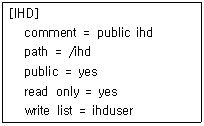
- 공유된 디렉토리의 이름은 IHD 이다.
- 공유된 디렉토리의 접근은 누구나 가능하다.
- ihduser 사용자는 쓰기가 가능하다.
- ihduser 사용자는 읽기전용으로만 가능하다.
(정답률: 69%)
79. NFS 서버의 설정 파일인 /etc/exports의 옵션중에서 클라이언트의 root 사용자를 서버에서의 root사용자로 매핑할 수 있도록 하는 옵션으로 알맞은 것은?
- root_squash
- no_root_squash
- nobody_squash
- all_squash
(정답률: 57%)
80. NFS 서비스의 보안에 필요한 설정 파일 및 관련 데몬이 아닌 것은?
- hosts.allow
- showmount
- hosts.deny
- portmap
(정답률: 65%)
81. 다음 ProFTPD 서비스에 대한 설명 중 틀린 것은?
- FTP 서비스 포트는 20/21 포트를 사용한다.
- ProFTPD 서비스는 단독데몬(Standalone)으로만 작동되며, xinetd 서비스로는 동작할 수 없다.
- FTP 서비스의 최대 자식 프로세스 수를 지정 할 수 있다.
- <Limit> 문맥을 사용하여 FTP에서 사용가능한 명령어에 대한 사용제한을 설정한다.
(정답률: 67%)
82. 다음 중 메일 전송 에이전트(MTA)가 사용하는 포트로 알맞은 것은?
- 22
- 25
- 110
- 143
(정답률: 55%)
83. 다음 중 메일을 전송하는 데 사용되는 프로그램과 프로토콜이 알맞게 짝지어진 것은?
- sendmail – smtp
- qmail – pop3
- pop3 – imap
- pop3 – sendmail
(정답률: 63%)
84. Sendmail 환경설정 파일중 sendmail.cf 파일을 생성하기 위해서 m4 매커니즘을 사용할 때, m4 입력 파일 내에서 주석문을 입력하기 위한 문자열로 알맞은 것은?
- !
- #
- //
- dnl
(정답률: 32%)
85. 다음 중 ihd.or.kr시스템에 web123@ihd.or.kr 이라는 메일계정이 존재하지 않는 상태에서, web123@ihd.or.kr으로 도착한 메일 메시지를 ihd123@linux.com으로 포워딩하기 위해 수정할 파일로 알맞은 것은?
- /etc/mail/virtusertable
- /etc/aliases
- /etc/mail/mailertable
- /etc/mail/access
(정답률: 40%)
86. 다음 xinetd.conf 파일의 내용 중 옵션에 대한 설명이 틀린 것은?
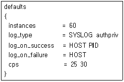
- instances : 동시에 작동할 수 있는 동일 유형 서버의 최소 개수는 60개 이다.
- log_on_success : 서버가 구동할 때 클라이언트의 IP와 프로세스 ID 타입으로 기록된다.
- cps : 25개의 접속수가 넘었을 경우에 30초 동안 해당 서비스가 비활성화 된다.
- log_type : 로그 포맷을 지정하는 속성으로 SYSLOG 와 auth 타입으로 기록된다.
(정답률: 40%)
87. 다음 슈퍼 데몬의 서비스 제어 TCP Wrapper의 hosts.deny 파일에 대한 설명으로 틀린 것은?
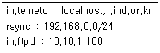
- localhost와 ihd.or.kr의 모든 호스트들에게 telnet 서비스를 거부한다.
- rsync 서비스는 192.168.0.0 대역에서 서비스를 거부한다.
- ftp 서비스는 10.10.1.100을 제외하고 모두 허용 한다.
- ftp 서비스는 ihd.or.kr 대역만 제외하고 모두 허용한다.
(정답률: 52%)
88. BIND 네임 서버의 최상위 설정파일로 알맞은 것은?
- /var/named/bind.conf
- /etc/bind.conf
- /etc/named.conf
- /var/name.conf
(정답률: 54%)
89. 네임서버가 기본적으로 사용하는 포트번호로 알맞은 것은?
- port 25
- port 53
- port 23
- port 22
(정답률: 60%)
90. DNS(bind)의 설정 내용 중 리소스 레코드가 잘못 지정된 것은?
- @ IN NS ns.linux.co.kr.
- @ IN MX 5 mail.linux.co.kr.
- @ IN A 192.168.0.1
- @ IN PTR 192.168.0.2
(정답률: 58%)
91. DNS 서비스의 zone 파일 영역의 세부항목에 대한 설명으로 틀린 것은?
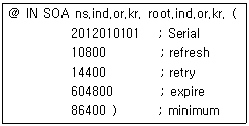
- Serial : zone 파일의 작성된 시간을 표시하는 정보영역 데이터의 번호를 의미하는 것으로 보조 DNS와 정보업데이트를 결정할 때 확인 하는 값이다.
- Refresh : 주DNS와 보조 DNS간에 정보 동기화를 위해 3시간(10800초)에 한번씩 요청한다.
- Retry : 보조 네임서버가 얼마간격으로 주 네임서버와 다시 접속할지를 설정하는 값으로 4시간(14400초)으로 설정되어 있다.
- Expire : 주 네임서버가 기존 정보를 파기하는 시간으로 1주(604800초)로 설정되어 있다.
(정답률: 49%)
92. 다음 squid.conf 환경설정파일 설명 중 틀린 것은?
- http_port 3128 : 스퀴드 프록시서버의 접속 서비스 수를 3128로 지정한다.
- cache_mem 8 MB : 스퀴드서버에서 사용하는 캐시 사이즈를 8 MB 로 설정한다.
- cache_dir /usr/local/squid/cache 1000 16 256 : 캐시데이터가 최대 1000M 이고 저장될 1차 디렉토리 16개, 2차 디렉토리 256개로 설정한다.
- cache_effective_user nobody : 스퀴드 서버를 작동시킬 유저는 nobody로 지정한다.
(정답률: 48%)
93. 프록시(Proxy) 서버를 구성하기위해 Squid를 설정 후 스왑 디렉토리를 초기화 하기 위한 명령어 옵션으로 알맞은 것은?
- -z
- -Z
- -c
- -C
(정답률: 24%)
94. NISDOMAIN 설정 변수가 재부팅시에도 적용되기 위해 저장되어지는 위치로 알맞은 것은?
- /etc/sysconfig/network
- /etc/sysconfig/network-scripts/ifcfg-interface
- /var/yp/securenets
- /etc/resolv.conf
(정답률: 39%)
95. 다음 중 네트워크 인증 구성 요소(network authentication scheme)로 틀린 것은?
- NIS
- LDAP
- PAM
- autofs
(정답률: 55%)
96. 다음에서 설명하는 것으로 알맞은 것은?
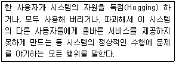
- 트로이 목마
- DoS(Denial of Service) 공격
- 웜 바이러스
- 버퍼 오버플로
(정답률: 65%)
97. 다음 iptables 방화벽 설정중 192.168.1.100으로 들어오는 모든 패킷중에서 tcp 프로토콜 관련 패킷만 거부하는 설정의 ( 괄호 )안에 들어갈 내용을 순서에 맞게 나열한 것은?
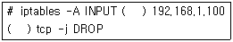
- -s, -p
- -d, -u
- -s, -u
- -d, -p
(정답률: 43%)
98. 다음 중 방화벽의 기본적인 기능이 아닌 것은?
- 상태 기반 감시
- 응용 계층 프록시
- 패킷 필터링
- 네트워크 계층 프록시
(정답률: 32%)
99. 다음에서 설명하는 것으로 알맞은 것은?
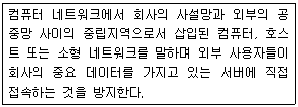
- DMZ
- VPN
- PROXY
- IDS
(정답률: 52%)
100. 다음에서 설명하는 공격유형으로 알맞은 것은?
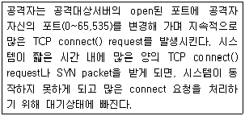
- Host Sweep
- TCP DRDOS Attack
- TCP SYN Flooding(DDoS)
- 버퍼 오버플로우(Buffer overflow)
(정답률: 66%)
로더는 컴파일된 프로그램을 메모리에 적재하고 실행 가능한 형태로 변환하는 역할을 합니다. 이때 프로그램의 실행 위치를 지정하고, 필요한 라이브러리를 로드하며, 실행에 필요한 자원을 할당하는 등의 작업을 수행합니다.